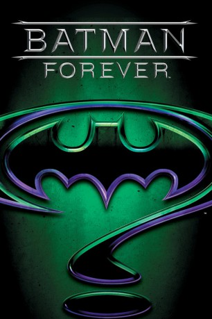
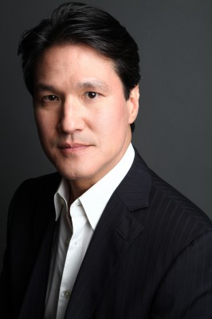
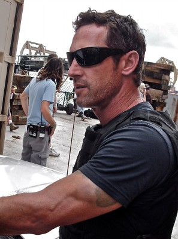

#2506 Batman Forever
Auszeichnungen: für 3 Oscars nominiert
 
 IMDB-Wertung: 5.4 / 10
IMDB-Wertung: 5.4 / 10  Metascore: 51
Metascore: 51 
Der dunkle Ritter von Gotham City hat es diesmal mit zwei äusserst gefährlichen Schurken zu tun: Der frühere Staatsanwalt Harvey Dent, der durch einen schrecklichen Unfall im Gerichtssaal entstellt wurde und zu Harvey Two-Face mutierte, macht fälschlicherweise Batman für seine Leiden verantwortlich. Dann ist da noch Edward Nygma, der ein neuartiges Fernsehvergbügen für die Einwohner von Gotham erfunden hat, und zeitweilig in der Person des Riddler Batman knifflige Rätsel zu lösen gibt…
Jahr: 1995
Dauer: 121 Minuten
FSK: 12
Land: USA Studio: Warner Bros.Tonspuren: DD5.1 - ,
Untertitel:
Auflösung: 1080p (1920x1080) Größe: 10240 MB
Genre: Action, Abenteuer, Fantasy
Regisseur:  Joel Schumacher
Joel Schumacher
Drehbuch: Bob Kane, Lee Batchler, Janet Scott Batchler, Lee Batchler, Janet Scott Batchler
Soundtrack: Elliot Goldenthal
Darsteller:
 Val Kilmer als Batman / Bruce Wayne
Val Kilmer als Batman / Bruce Wayne Tommy Lee Jones als Two-Face / Harvey Dent
Tommy Lee Jones als Two-Face / Harvey Dent Jim Carrey als Riddler / Dr. Edward Nygma
Jim Carrey als Riddler / Dr. Edward Nygma Nicole Kidman als Dr. Chase Meridian
Nicole Kidman als Dr. Chase Meridian Chris O'Donnell als Robin / Dick Grayson
Chris O'Donnell als Robin / Dick Grayson Michael Gough als Alfred Pennyworth
Michael Gough als Alfred Pennyworth Pat Hingle als Commissioner James Gordon
Pat Hingle als Commissioner James Gordon Drew Barrymore als Sugar
Drew Barrymore als Sugar Debi Mazar als Spice
Debi Mazar als Spice Rene Auberjonois als Dr. Burton
Rene Auberjonois als Dr. Burton Joe Grifasi als Bank Guard
Joe Grifasi als Bank Guard-  Philip Moon als Male Newscaster
 Jessica Tuck als Female Newscaster
Jessica Tuck als Female Newscaster Kimberly Scott als Margaret
Kimberly Scott als Margaret Michael Paul Chan als Executive
Michael Paul Chan als Executive Jon Favreau als Assistant
Jon Favreau als Assistant Greg Lauren als Aide
Greg Lauren als Aide Jack Betts als Fisherman
Jack Betts als Fisherman- Larry A. Lee als Dad Grayson
- Bruce Roberts als Handsome Reporter
 George Wallace als The Mayor
George Wallace als The Mayor- Bob Zmuda als Electronic Store Owner
- Rebecca Budig als Teenage Girl
- Don 'The Dragon' Wilson als Gang Leader
- Terry Ellis als Girl on Corner #2
- Cindy Herron als Girl on Corner #3
- Gary Kasper als Pilot
- Ria Coyne als Socialite
- Jed Curtis als Chubby Businessman
- Kelly Vaughn als Showgirl
- Noby Arden als Trapeze Act
- Christopher Caso als Harvey's Thug
- Oscar Dillon als Harvey's Thug
 Kevin Grevioux als Harvey's Thug
Kevin Grevioux als Harvey's Thug Mark Hicks als Harvey's Thug
Mark Hicks als Harvey's Thug-  Brad Martin als Harvey's Thug
 Jim Palmer als Harvey's Thug
Jim Palmer als Harvey's Thug- Peewee Piemonte als Harvey's Thug
 Joe Sabatino als Harvey's Thug
Joe Sabatino als Harvey's Thug- Matt Sigloch als Harvey's Thug
 Mike Smith als Harvey's Thug
Mike Smith als Harvey's Thug- Michael Dane als Gotham City SWAT , uncredited
- Nancy Gassner-Clayton als Solo Singer , uncredited
- Timothy Guest als Lab Techician , uncredited
- Velvet Rhodes als Hooker , uncredited
- Elizabeth Sanders als Gossip Gerty
- Dennis Paladino als Crime Boss Moroni
- Ramsey Ellis als Young Bruce Wayne
- Michael Scranton als Thomas Wayne
- Eileen Seeley als Martha Wayne
Datei: X:\Comic-Filme\Batman\Batman Forever (1995, FSK12, 1920x1080).mkv seit 14.11.2015
Festplatte: Comicverfilmungen+MusikCD
 Es gibt insgesamt 13 Filme in der Gruppe 'Comic-Filme\Batman'
Es gibt insgesamt 13 Filme in der Gruppe 'Comic-Filme\Batman'